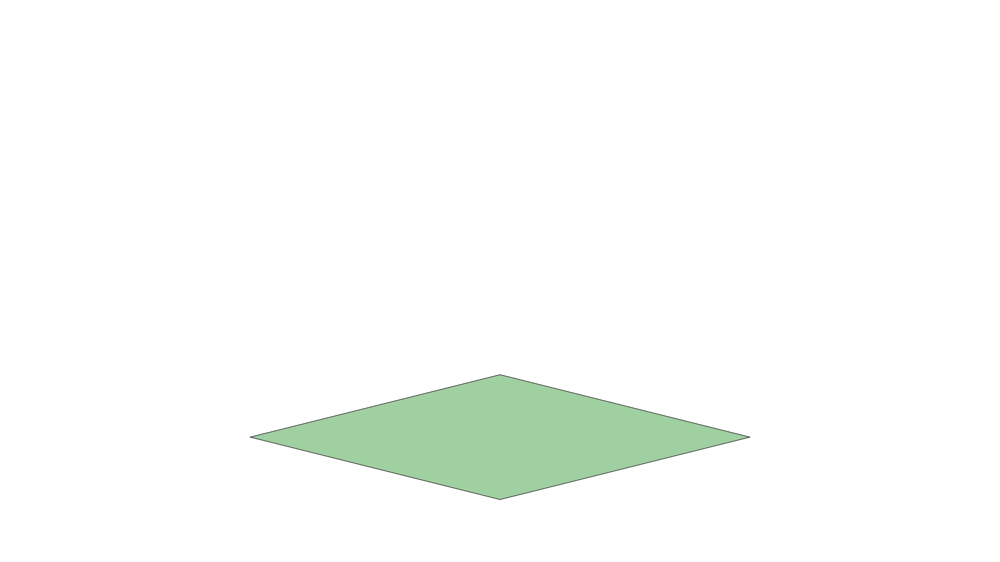
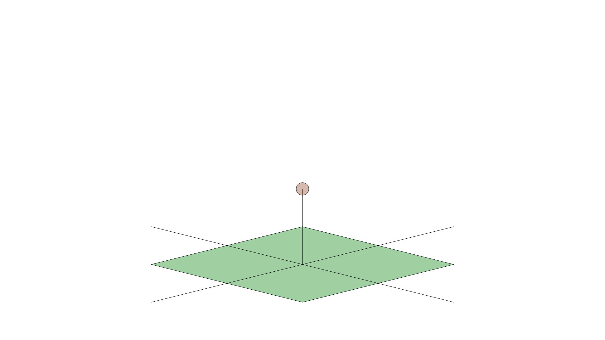
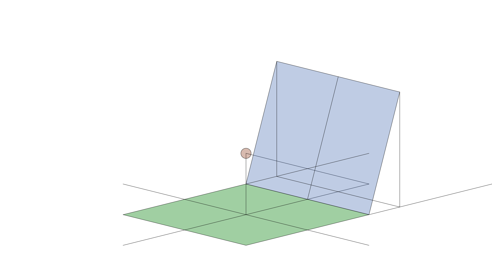
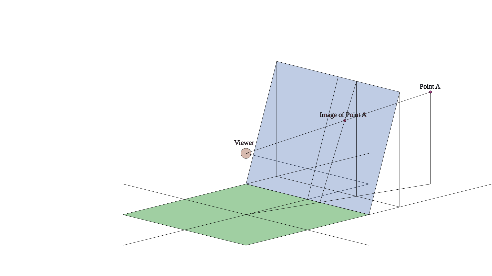

Перспектива в рисовании включает в себя набор техник, которые позволяют создавать трёхмерную иллюзию на плоском листе. Обычно она основана на применении оптических принципов, но порой их можно нарушать. В этом тексте я постараюсь дать краткое описание некоторых их этих принципов и техник. Часто авторы текстов по перспективе избегают излишне технических терминов и обозначений. Этот текст при необходимости будет избегать подобного избегания.
Ключевым объектом в перспективе является . Эта закорючка может расшифровываться как "Трёхмерное векторное пространство над полем вещественных чисел" или как "Трёхмерное аффинное пространство над полем вещественных чисел" в зависимости от контекста. Если читатель не интересовался математикой, то от подобного объяснения понимания не прибавится, а если он прослушал хотя бы один семестровый курс математического анализа и линейной алгебры, то ему хватило бы и исходной закорючки. При этом рисованием могут заниматься как и дети из первых классов, так и пожилые доктора математических наук. Стоит задача структурировать текст так, чтобы опытный читатель мог пропустить многословные объяснения и определения, а читатель, не имеющий привычки работать с математическими объектами, имел возможность разобраться. Я пока не знаю, как решить эту проблему, но надеюсь, что в процессе написания удастся приблизиться к её разрешению. Во многом, этот текст является упражнением в написании текстов, которые могли бы помочь людям углублять и расширять свои познания.
Перспектива решает задачу убедительного изображения трёхмерного объекта на двумерном листе.
Уже в этой фразе используются ключевое понятие размерности. Трёхмерность, двумерность, одномерность уже плотно вошли в набор слов, которые используются людьми, и многие люди имеют интуитивное понимание того, что такое размерность. Но хотелось бы подчеркнуть, что все эти понятия на самом деле довольно сложны.
Основополагающим и самым общим является понятие точки и пространства. Если есть некоторый набор, класс, тип или множество каких-то сущностей, то элементы называют точками , а само называют пространством, в котором эти точки лежат. Принято считать, что размерность пространства, в котором есть только одна точка равна нулю. Это имеет красивые математические причины, но если представить себе точку на листе бумаги и прикрепить некоторый объект в этой точке, то у этого объекта 0 степеней свободы. С одной стороны, он обязан быть в листе бумаги, с другой стороны, даже в листе бумаги он прикован к точке, внутри которой двигаться невозможно. Понятие числа степеней свободы во многом совпадает с понятием размерности, но добавляет некоторый "физический" смысл, который порой привносит дополнительные ассоциации и углубляет понимание.
Уже в размерности 1 начинаются некоторые сложности. Для того, чтобы можно было говорить о размерности выше нуля, у измеряемого пространства должна быть некая структура. Беспорядочный набор точек, где нет понятия о том, что какие-то две точки близкие или далёкие, отделимые или неотделимые, где нет возможности говорить хотя бы что-то о наборах точек, не позволяет измерить свою размерность. Представьте, что пространством является множество мусора в мусорном мешке. Каждая единица мусора сама по себе имеет размерность 0. Считая, что размерность объемлющего пространства должна быть не меньше размерностей его частей, можно заключить, что размерность мусора не меньше нуля, что не является интересным утверждением.
Для решения этой проблемы легче всего ввести абстрактные понятия в духе вещественной прямой, принять их за эталон и сравнивать всевозможные пространства с ними для вычисления размерности. Но т.к. этот текст не является и не претендует на то, чтобы быть строгим математическим текстом, то мы можем допустить некоторую степень рукомахательства. А именно, за эталон одномерного пространства мы будем принимать прямую, проходящую через две точки.
Этот эталон довольно неряшливо определён, ведь не ясно, что такое прямая, что значит, что прямая проходит через две точки и почему такой объект вообще существует. Но если читатель уже знаком с этими понятиями, то объяснять их ему не стоит, а если он не знаком, то у него, скорее всего, нет даже и мысли о том, чтобы задуматься об этих вопросах и у него в голове есть некоторая модель прямой, которая проходит через две точки. Например, такой моделью может быть линия, которая получается, если приложить линейку к двум точкам и провести ручкой или карандашом вдоль линейки. Такое понимание не сильно хуже, чем строгое математическое, если мерилом является желание изучить перспективу в рисовании. За эталон двумерного пространства принимается бесконечный лист бумаги. За эталон трёхмерного пространства - бесконечное пространство, в которое он вложен, напоминающее пространство, в котором мы живём.
Убедительность часто ассоциируется с попыткой изобразить то, что мы видим. Но зрение человека устроено очень сложным образом и мы можем лишь пытаться приблизить зрение некоторой моделью. Можно разными способами обосновывать, что модель зрения хороша или плоха, но в конечном итоге всё сводится к тому, получает ли человек опыт восприятия трёхмерного объекта, когда он смотрит на рисунок. Достигать этого можно разными способами.
Классическая модель зрения, которая порождает основые способы перспективных построений устроена довольно просто. Опишем её в несколько шагов. Всё начинается с трёхмерного пространства. Обозначать его будем схематически при помощи искажённого четырёхугольника, который обозначает землю, над которой находится пока пустое полупространство.

Теперь выберем любую точку этого пространства, которую назовём "камерой", "зрителем" или "наблюдателем". Все эти названия равноправны. Для большей наглядности, стоит выделять не только точку наблюдателя, но и точку земли, над которой находится наблюдатель.

Наконец, введём направление взгляда. Оно может быть любым. Перпендикулярно направлению взгляда можно выбрать плоскость картины. Опять же, расстояние от зрителя до плоскости картины может быть любым, но оно должно быть зафиксировано и должно быть едино для всей конструкции.

Это завершает "настройку камеры". Теперь надо сказать, что же видит наблюдатель в этой модели. Выберем точку в пространстве. При выборе новой точки в пространстве всегда стоит указывать, над какой точкой земли она находится - это вносит порядок в схему и устраняет неоднозначность. Теперь можно построить прямую, соединяющую точку в пространстве и наблюдателя. В таких ситуациях крайне рекомендуется соединять не только сами точки, но и их "опоры", над которыми они висят - это пригодится для поиска точки пересечения. (Более подробно про подобные построения в будущем будет написано на отдельной странице.) Точка пересечения плоскости картины и прямой, соединяющей наблюдателя и обозреваемую точку, называется изображением данной точки.

Таким образом можно построить образ любого набора точек. Но интересные композиции обычно состоят из объектов, которые содержат бесконечно много точек. К счастью, некоторые наборы точек обладают свойствами, которые позволяют построить их изображение быстрее, чем за бесконечное время. Об этом пойдёт речь в следующих параграфах.